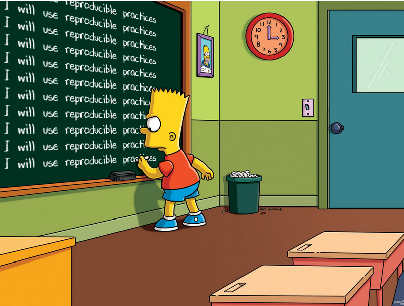

Creating a data cleaning workflow
By Crystal Lewis in tutorials
February 15, 2023
Data cleaning workflow
Data cleaning is the process of organizing and transforming raw data into a format that can be easily interpreted and analyzed. In education research, we are often cleaning data collected in the field from methods such as surveys, assessments, tests, or forms.
Even if we collect data with the most well-designed collection tools, there is most likely at least some cleaning that is needed before you have a dataset that is ready to be shared within or outside of your team. And oftentimes, we want our cleaning process to be standardized, reproducible, and reliable. Yet, despite our best intentions, many times we (myself included) end up cleaning data in a somewhat haphazard way, leading to more work after the cleaning process, having to organize our messy work so that others can understand what we did. So how do we create data cleaning workflows that are standardized, reproducible, and produce reliable data? In this second post of the data cleaning workflow series, I share some of my ideas.
Preliminary data cleaning steps
Before you dive into data cleaning, there are several preliminary steps you need to take. All of these steps will help standardize your process as well as your outputs, reducing the chaos sometimes created through haphazard data cleaning. Those steps are as follows:
- Have your data dictionary created
- Have your variables named and coded according to your style guide
- Have your data cleaning plan written
- Review the plan with your team before you start your cleaning process
- Review any readme files that have been provided for you
- Incorporate those into your data cleaning plan
- Have your participant tracking database up to date and accessible
- Have your folder structures set up according to your style guide
- Have your files named according to your style guide
Before I start cleaning data, I always have the first four files open and ready to be referenced as I clean my data. So let’s briefly review the documents mentioned in these steps.
Data dictionary
A data dictionary is a rectangular format collection of names, definitions, and attributes about variables in a dataset and it is the document where you lay out exactly how you expect your data to be structured. This document should tell you allowable variable values, assigned variable names, allowable variable types, and more. It will inform your entire data cleaning process.
Data cleaning plan
I have written a lot about data cleaning plans in many other places, but in a nutshell, this is a written proposal outlining how you plan to transform your raw data into clean, usable data. This document contains no code and is not technical skills dependent. It is helpful to create these before you clean your data so that you can share these with collaborators and get consensus on planned transformations.
The steps you write into your data cleaning plan are going to be dependent on your actual data. If you are able to export sample data from your data collection tool you can start creating this plan early on. If not, you will most likely not be able to start this data cleaning plan until you are able to actually access your raw data file.
To create your plan begin comparing the raw data to your data dictionary. As I mentioned in a previous blog post, hopefully you designed your data collection instrument according to your data dictionary. If you did, very little transformation should be required. However, if you did not, start to compare the differences between what you expect your variables to look like and what the actual raw data looks like. This will be the foundation for writing your data cleaning plan.
After doing some comparison, you can then use the standardized data cleaning checklist we discussed in the previous post, to guide you as you think through what transformations are required to create a clean dataset for the purposes of general data sharing. Add the steps that are relevant to your data and remove the steps that are not relevant. Remember, the order of the steps are fluid and can be reorganized as needed.
The last important thing to remember is, this is a living document. As you begin cleaning your data you may find more necessary transformation that you did not catch at first. You can continue to update this document throughout your cleaning process.
Readme files
Readme files are also plain text files that collaborators may store in a folder, alongside a raw data file. These files contain notes that may be relevant to your data cleaning process. Maybe there was an error that occurred during data collection that a collaborator needs you to fix in the cleaning process. For instance, a project coordinator may note that “ID 1234 should actually be ID 1235”.
Participant tracking database
This database houses all linking information about your participants (identifying information along with study IDs), as well as all tracking information about data that has been collected on participants. Assuming that someone, such as a project coordinator, has kept this database up to date, you should be able to use this database as a way to confirm the sample size should be for all of your datasets. Having tracked completion status for all participants during data collection, this database is one way to identify if any forms are missing (or duplicated). If you do not have direct access to this database, at minimum work with the owner of the database to retrieve completion numbers for comparison.
Style guide
Last, a style guide is a set of standards for how your team should organize data for your project. This document should provide rules for how to structure project folders and name project files in a way that promotes standardization in your work. Naming files and folders consistently, with metadata always provided in the same order, with the same naming structure, allows your process to be more reproducible.
This guide also informs how you name and code variables and will be used as you construct your data dictionary.
Cleaning data using reproducible practices
Once you are ready to begin actually cleaning your data, there are several steps you can take to improve the reproducibility of your work.
- Use code
- While you can clean data through a point and click method in a program like SPSS or Excel, cleaning data manually is typically not reproducible, leads to errors, and is time consuming.
- My recommendation is to clean your data, no matter how small the task, with syntax. Don’t do any transformations outside of code (even if you think it is something insignificant). Once you do, your chain of processing is lost and your process is no longer reproducible.
- Syntax files allow you to have a record of every transformation you make from the raw data to your clean data. While writing syntax may seem time consuming up front, it helps you to be more thoughtful in your data cleaning process and it can save you an enormous amount of time in the future if you plan to clean data for the same form multiple times (in say a longitudinal study).
- While I am personally an R user, choose any program that works for you, there are many options.
- Use comments
- Code comments help you to organize and communicate your thought process. While your syntax may seem intuitive to you, it is not necessarily clear to others. As you clean your data according to your data cleaning plan, comment every step in your syntax, explaining what that specific line of code is doing.
- Follow a coding style guide
- Creating a code style guide for your team/project ensures that all team members are setting up their files in a consistent manner. This reduces the variation across code files and allows your code to be more usable by others. It is even possible to create code templates that team members can use to create even more standardization.
- Use relative file paths
- Setting absolute file paths in our syntax reduces the reproducibility of our code because future users may have different file paths than us. Set your file paths relative the directory you are working in.
# Absolute file path
svy <- read_csv("C:/Users/Crystal/projecta/data/w1_proja_stu_svy_raw.csv")
# Relative file path
svy <- read_csv("data/w1_proja_stu_svy_raw.csv")
- Don’t do anything random
- Everything in your syntax must be replicable. Yet, there are a few scenarios where, without much thought, you could be producing different results each time you run your code.
- If you randomly generate any numbers in your data (like study IDs) then you need to set a seed. For instance, in R, adding the
set.seed()function in your syntax means when you or someone else runs your syntax again, they will get the same set of random numbers. Otherwise, you will get a new random set of IDs each time your syntax is run. - Another example is when you are removing duplicates. Be purposeful about how you remove those duplicates and order your data in a specific way before dropping cases. If someone at some point shuffles your raw data around and you re-run your syntax, you may end up dropping a different duplicate if you did not arrange your data first.
- If you randomly generate any numbers in your data (like study IDs) then you need to set a seed. For instance, in R, adding the
- Everything in your syntax must be replicable. Yet, there are a few scenarios where, without much thought, you could be producing different results each time you run your code.
- Record your session info
- In a program like R, you can record your session information in your syntax, or into a plain text file, so that future users can review the requirements needed for running your code. Information about package versions and operating system used are recorded. If users run into errors running your code, this information may help them troubleshoot.
Cleaning data using reliable practices
There are several practices you can implement that will also help you have more confidence in your data cleaning process.
- Review your data upon import
- As briefly discussed in the previous post, it is imperative that you review your data before beginning to clean it to ensure you have a thorough understanding of what is happening in your data.
- This review process can be manual if the data is small. Or if you have a large amount of variables to review, build in automated checks at the beginning of your code that writes out an error message when your checks fail.
- This review process can become even more relevant if you are reusing a syntax to clean data collected multiple times (for instance, in a longitudinal study). I’ve been a part of many studies where I expected my syntax to run without a hitch every wave of data collection, assuming that forms did not change over time. Yet I learned hard lessons when I found out later on in the cleaning process that items had been added, variable names changed, or even the allowable values had shifted.
- It’s best to find this out before you start the cleaning process so you can adjust your data cleaning plan and your code as needed. Otherwise you may be running a script that is incorrectly cleaning your data.
Very simple example of automating checks of your raw data
# Read in my raw data
svy <- read_csv("data/w1_proja_stu_svy_raw.csv")
# Check to see if my raw data still contains 432 variables
if (ncol(svy) != 432) {
print ("Survey has changed!")
}
- Write functions for repeatable tasks
- As the sayings go, “Don’t repeat yourself” or “Never write the same code twice”. This can be a really difficult habit to break, especially for people who are fairly new to code writing. But once you are comfortable with writing some basic functions, there are good reasons to move that 10 lines of code that you repeat multiple times, into a one line function that you can call throughout your script.
- Not only does it make your script more readable, but it reduces the errors that might be created through things like copy and paste.
- Similarly, find ways to automate some of your tasks. For instance, rather than renaming all of your variables by hand, use your data dictionary to automate tasks like this. This not only increases efficiency but also reduces mistakes you might make when typing out variable names.
- Check each transformation
- Check your work along the way, don’t just wait until the end of your script. For each transformation in your data:
- Review your data/variables before and after the transformations
- Review all errors/warning codes
- Some warnings may be innocuous (just messages)
- Some errors are telling you that your code did not run, you need to fix something
- Other warnings are telling you that your code did run but it did not run as you expected it to. These are the scariest to me. If you don’t pay attention to these warnings, you may end up with unexpected results. See the example below where I never noticed that one value in my
scorevariable has TWO decimal places. When I convertedscoreto numeric, R did not know how to convert this value so it becameNA.
- Check your work along the way, don’t just wait until the end of your script. For each transformation in your data:
Example of a useful warning message
# Convert `score` to a numeric variable type
# Check - review before transformation
svy
# A tibble: 2 x 2
id score
<dbl> <chr>
1 102 25.1
2 103 22..3
# Transform `score` to numeric
svy <- svy %>%
mutate(score = as.numeric(score))
Warning in mask$eval_all_mutate(quo): NAs introduced by coercion
# Check - review after transformation
svy
# A tibble: 2 x 2
id score
<dbl> <dbl>
1 102 25.1
2 103 NA
- Validate your data before exporting
- As we discussed in the previous post, this is when you will want to run through your final list of sanity checks to make sure no mistakes exist in the data before you export it.
- Version your data AND code and keep change logs
- It is inevitable that at some point you will find an error in your data and/or your code. However, once you’ve shared your data and code with others, it will be imperative that you do not save over existing versions of those files. Versioning your files and keeping track of those different versions in a changelog allows you to track data lineage, helping users understand where the data originated as well as all transformations made to the data.
- Do code review
- If you have the luxury of having more than one person on your team who understands code, I highly recommend to incorporate code review into your workflow. This is the process of having someone other than yourself, review your code for things such as the readability, usability, and efficiency. Through code review it’s possible to create more usable and readable code, as well as catch errors you were not aware of.
Similar to what I mentioned in the previous post, this is not a catch-all list of practices. These are practices that I have found, through my own work and by learning from others, has helped me improve my data cleaning workflow in a way that produces data in a more standardized, reproducible, reliable way. As always, I am open to comments and feedback! In the last post of this series, we will use the lessons from these last two posts to implement a data cleaning workflow for an example education research dataset to see what these practices might look like in a real scenario.